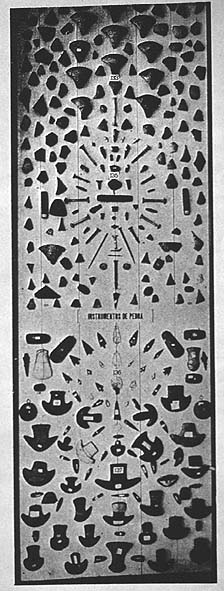

|
|  |
| Marc Ferrez, Exposição
Antropológica Brasileira |
Museum displays were among the most effective optical apparatuses of
producing selfness and otherness in the way the exposed objects to the
gaze of a beholder. Incapable of returning the gaze, the object also
had a fixed place assigned to it in the space of the museum, whereas
the beholder travelled from one gallery to the next, all the while
accumulating the "knowledge" produced, precisely, by this kind of
peripatetic, accumulative "seeing-together". Typological displays of
items of material culture such as the one shown in the image above,
actively encouraged viewers to compare cultural achievements between
one location and another, by placing items of a similar shape and/or
function from different cultural contexts together. Their relative
sophistication, it was suggested, allowed to quantify the degree of
"cultural evolution" of the community that had produced it (a gradual
scale from which the beholder's own culture, as the arbiter of
differences, was at the same time subtly being removed).

|